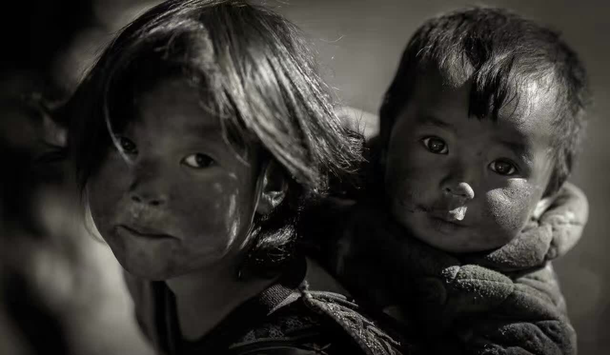

As an amateur photographer, my father has the opportunity to get to know all kinds of people.
Some of them are the elder and children in poverty-stricken areas, like Liangshan area.
My father became a volunteer there who is devoted to help such groups.
Also, He calls for more attentions on Liangshan area through his photographic works.

TO BE
A VOLUNTEER
IN LIANGSHAN
MORE
THEN A
PHOTOGRAPHER
ABOUT LIANGSHAN
Liangshan Yi Autonomous Prefecture in Sichuan is located in Southwest Mountain Range in China. It is the largest traditional settlement of minority people known as “Yi” in China with more than two million Yi inhabitants. It is a beautiful place which is an ideal land for a photographer. But it is also the most poverty-stricken areas in the country. During years, I visited Liangshan more than ten times. Not only to take photographes, but also to help the poeple there, especially the children and elders.